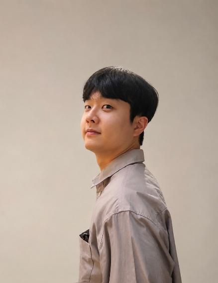

Curriculum Vitae
진승현
Product(제품) 직무 지원
Email
tmdgus3028@naver.com
Phone
010-2358-8173

Profile
토스에서 일하며 문제를 적극적으로 찾고 제안하는 태도를 배웠고, 제품과 운영 개선에 대한 관심을 키웠습니다. 이후 고객이 서비스를 이용하며 겪는 불편과 운영상의 비효율을 발견하고, 이를 운영 기준·제품 개선안·데이터 검증으로 연결해 왔습니다.
제품을 만들고 운영한다는 것은 사람들의 불편을 줄이고 더 편리한 경험을 만드는 일이라고 생각합니다. 앞으로도 빠르게 배우고 실행 가능한 개선안으로 옮기는 태도로 토스뱅크의 제품과 운영 개선에 기여하고 싶습니다.
Product Operations 역량 요약
-
앱 서비스 기획 및 제품화 · 지출관리 앱 프로젝트에서 문제 정의, 사용자 가설 수립, 설문 설계, 기능 우선순위 설정, 개발자·디자이너와의 요구사항 조율, iOS TestFlight 테스트까지 경험했습니다.
-
가설 검증 및 데이터 기반 의사결정 · 앱 프로젝트의 제품 가설을 검증하기 위해 광고·리워드 기반 설문을 설계·운영하고, 수집 데이터의 무결성을 검토했습니다. 이후 사용 의향과 수요를 분석해 핵심 기능 방향 결정에 활용했습니다.
-
운영 프로세스 개선 및 표준화 · TossCX 영상인증 업무에서 비대면 본인인증 과정의 반복 문제와 절차상 비효율을 AS-IS/TO-BE 개선안으로 정리해 제안했습니다. 또한 FDS·비밀번호 초기화 상담 흐름, 고객 안내 표현, 주요 예외 상황, 오처리 방지 기준을 구조화한 실무 정리본을 만들었고, 이는 이후 온보딩 과정 참고자료로 활용되었습니다.
-
커뮤니케이션 및 실행 효율화 · 앱 프로젝트에서 개발자·디자이너와 기능 범위, 우선순위, 요구사항을 조율하며 제품 구현 과정의 문제를 해결했습니다. 공직 재직 중에는 관련 부서·기관·단체와 소통해 ESG 공모전 홍보 접점 확대와 참여 독려를 수행했고, 하루치 프로젝트에서는 AI 툴로 프로토타입·목업·와이어프레임 초안을 빠르게 만들며 협업 효율을 높였습니다.
Selected Experience
하루치 HARUCHI ·개인 재무관리 앱 PM
2024.03 — 현재
사용자가 소비 순간에 참고할 수 있는 유연한 소비 기준을 제공하는 개인 재무관리 서비스입니다. 단순히 하루에 쓸 수 있는 금액을 정해주는 것이 아니라, 실제 지출에 따라 남은 예산을 자동으로 재조정해 사용자의 소비 습관을 교정할 수 있도록 설계했습니다.
-
문제 정의사용자가 월 예산을 세워도 월말에 예상보다 많이 지출하는 문제를 “의도와 실제 소비 사이의 괴리”로 정의했습니다. 기존 예산 관리는 오늘 초과 지출을 해도 내일의 기준이 그대로 유지되기 때문에, 과소비가 반복되거나 사용자가 “이미 실패했다”고 느끼고 소비관리를 포기하는 문제가 있다고 판단했습니다. 또한 약속이 있는 날과 없는 날처럼 매일의 지출 상황이 다르기 때문에, 고정된 하루 예산보다 실제 소비에 따라 조정되는 유연한 기준이 필요하다고 보았습니다.
-
가설 검증 및 데이터 무결성 검토소비관리 실패의 핵심 원인을 월 단위 예산의 체감 어려움과 소비 순간의 기준 부재로 정의하고, 이를 검증하기 위해 Instagram 광고와 기프티콘 리워드 이벤트를 진행해 외부 설문 참여자를 모집했습니다. Raw data 447건을 수집한 뒤, 중복 ID, 응답 시간, 패턴 응답 등을 기준으로 데이터 무결성을 검토해 261건의 유효 응답을 확정했고, 이후 제품 방향을 판단하는 분석 대상으로 활용했습니다.
-
분석 결과 및 제품 의사결정유효 응답 분석 결과, 월간 소비 초과 경험은 96.2%로 확인되었습니다. 소비관리에서 가장 어려운 점은 “전체 예산에 미치는 타격이 느껴지지 않음”(37.8%), “오늘 얼마까지 써도 되는지 모름”(26.9%), “기록은 하지만 지출이 줄지 않음”(21.0%), “과소비 후 다음 지출 조정 기준이 없음”(14.4%) 순이었습니다. 이를 통해 사용자의 어려움이 단순 기록 부재가 아니라, 소비 순간의 기준 부재와 지출 이후 조정 구조의 부재에 있음을 확인했고, 하루예산·예산 리밸런싱 기능을 초기 핵심 기능으로 유지했습니다.
-
기능 설계와 제품화 성과위의 결과를 바탕으로, 하루예산을 고정값이 아닌 실제 지출에 따라 변하는 기준으로 설계했습니다. 초과 지출은 남은 기간의 예산 감소로, 절약은 미래 소비 여력 또는 가상금고 적립으로 반영하는 구조를 확정했고, 이를 바탕으로 하루예산, 예산 리밸런싱, 밀어쓰기/당겨쓰기, 가상금고를 핵심 기능으로 정리했습니다. 이후 10명 팀의 PM으로 기획과 개발 협업을 주도해 iOS TestFlight 테스트까지 진행했으며, UMC 데모데이에서 최우수상을 수상했습니다.
-
AI 툴 활용을 통한 실행 속도 개선하루치 기획 과정에서 AI 툴을 단순 문서 작성 보조가 아니라, 아이디어를 빠르게 시각화하고 검증하는 도구로 활용했습니다. Claude Code로 프로토타입과 목업을 만들어 직접 사용해보며 기능 흐름과 엣지케이스를 점검했고, Claude Design·Figma Make 등으로 와이어프레임 초안을 제작해 디자이너와의 커뮤니케이션 비용을 줄였습니다. 이와 별개로, 개인 업무 오거나이저와 대시보드를 만들어 프로젝트 관리 효율도 높였습니다.
TossCX ·Customer Supporter, 영상인증 전담
2023.11 — 2024.06
비대면 본인확인 과정에서 영상통화 인증을 전담하며 FDS 차단 해제, 비밀번호 초기화, 고객 본인확인, 상담이력 작성, 내부 기준 확인, 예외 케이스 대응을 수행했습니다. 고객이 인증 과정에서 겪는 불편과 상담원이 반복적으로 마주하는 운영 비효율을 발견하고, 이를 프로세스 개선안·실무 정리본·오류 검증 자료로 구조화했습니다.
-
비대면 본인인증 프로세스 개선비대면 본인인증 상담 과정에서 영상통화 사전 안내 부족, 문자 링크에 대한 신뢰 저하, 신분증 대조 과정의 심리적 부담, 개인정보 노출 우려 등 고객 불편이 반복된다는 점을 발견했습니다. 현행 FDS 차단 해제·비밀번호 초기화 흐름을 AS-IS로 정리하고, 고객 불편과 상담 지연이 발생하는 단계를 유형별로 분석했습니다. 이후 앱 내 사전 안내, 신분증 사전 촬영·등록, 알림톡·앱푸시 기반 링크 발송, 앱 내 영상인증 전환 등을 TO-BE 개선 방향으로 제시하고, 기대효과와 예상되는 운영상 이슈까지 포함한 개선안으로 문서화해 팀에 제안했습니다. 해당 개선안은 팀 내 공개 채널에서 공유되었고, 가능여부/리스크를 기준으로 검토·논의되며 긍정적인 피드백을 받았습니다.
-
반복 업무 표준화영상인증 업무를 수행하며 FDS·비밀번호 초기화 상담 흐름, 고객 안내 표현, 주요 예외 상황, 오처리 방지 기준 등을 구조화한 개인 실무 정리본을 만들었습니다. 단순 개인 메모에 그치지 않고, 신규 인력이 상담 흐름과 예외 상황을 빠르게 이해할 수 있도록 업무 순서와 판단 기준을 정리했습니다. 이후 Training Coach로부터 온보딩 과정에서 참고자료로 활용된다는 피드백을 받았고, 온보딩 커리큘럼 개편 과정에서 각 파트별 참고자료 형식을 고민하는 데에도 도움이 되었다는 평가를 받았습니다.
-
영상통화 오류 원인 가설 수립 및 기기별 검증영상인증 중 일부 고객 기기에서 카메라 전환 시 영상통화가 예기치 않게 종료되는 오류가 반복되는 것을 발견했습니다. 처음에는 랜덤 오류처럼 보였지만, 특정 기종에서 반복되는 패턴이 있을 수 있다고 보고 기기별 카메라 전환 가능 여부와 영상통화 종료 여부를 직접 확인했습니다. 아이폰·갤럭시 기종별로 테스트 결과를 정리한 결과, 다수 기기에서는 문제가 발생하지 않았으나 일부 보급형 갤럭시 기기에서 카메라 전환 불가 또는 영상통화 종료 현상이 반복되는 경향을 확인했습니다. 해당 결과를 표로 정리해 팀에 공유했고, 원인과 대응 방향을 논의하는 참고자료로 활용되었습니다.
-
고객 신뢰 저해 요인 개선고객센터 연결 번호가 외부 전화번호 검색 서비스에서 스팸번호로 노출되어, 고객이 토스 고객센터를 사칭이나 스미싱으로 의심할 수 있는 문제를 발견했습니다. 외부 서비스에서 노출 상태를 직접 확인하고 수정 요청을 진행해 정정되도록 기여했습니다. 작은 운영 이슈였지만, 비대면 인증 과정에서 고객 신뢰를 떨어뜨릴 수 있는 요인을 발견하고 직접 해결한 경험이었습니다.
서울시 자치구 기획예산과 ·일반행정직 9급, ESG 총괄
2025.01 — 현재
자치구 ESG 캠페인, 공모전, 인증 운영, 실적 관리, 구민 대상 행사 및 홈페이지 소개 페이지 기획을 담당했습니다.
-
ESG 캠페인 데이터 분석 및 운영 개선기존 사내에서 진행 중이던 ESG 캠페인 실적은 부서별 실천 횟수만 단순 집계되어, 실제 참여 수준과 부서별 편차를 파악하기 어려웠습니다. 이를 개선하기 위해 Excel로 참여율, 참여도, 부서별 참여율의 평균값·중간값·표준편차를 계산하고, 분기별 실적보고서를 작성했습니다. 분석 결과 특정 부서에 참여가 편중되고, 부서별 근무 여건과 실천과제 특성에 따라 참여 격차가 발생한다는 점을 확인했습니다. 이를 바탕으로 일부 실천과제 배점 조정 등 개선을 진행한 결과, 다음 분기에는 부서별·실천과제별 참여 격차가 완화되었습니다.
-
공모전 참여율 개선 및 관계자 커뮤니케이션전년도 ESG 공모전 접수 건수가 17건으로 저조했던 점을 바탕으로, 참여 가능성이 높은 기관을 직접 발굴하고 홍보 접점을 확대했습니다. 관련 부서에 관리단체 대상 홍보를 요청하고, 기관 방문 및 웹서칭 기반 개별 연락을 통해 참여를 독려했습니다. 또한 공모전 수상이 기관 활동의 공신력과 대외 홍보에 도움이 된다는 점을 설득 포인트로 활용하는 등, 결과적으로 접수 건수가 17건에서 33건으로 약 두 배 증가했습니다.